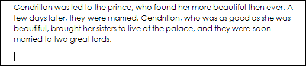
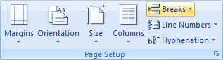
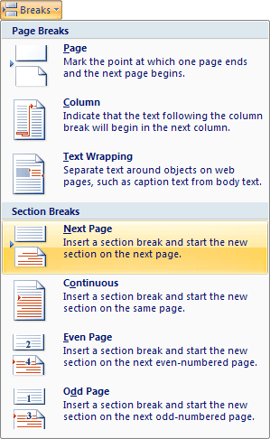
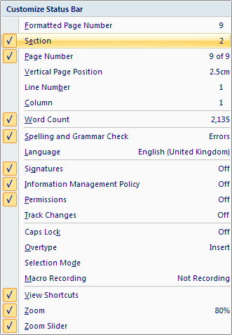
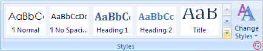
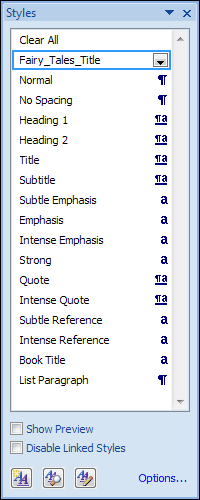

Free
computer Tutorials
|
Free
computer Tutorials
|
|
 home home |
|
|||||
Microsoft Word 2007 to 2010Page Breaks and Section BreaksWhen we add a new story, we want it to begin on a new page. To do this, you can add breaks. There are two types of breaks, page breaks and section breaks. Section breaks allow you to format things like headers and footers differently. For example, we don't want headers on pages with a title, but we do want them on other pages. Section breaks are ideal for this. If you didn't have them, each page would have the same header.
Scroll to the end of your first story, and left click on a new line.
You should see the cursor flashing:  Click on the Page Layout tab at the top of Word. Locate the Page Setup panel and the Breaks item:  Click on Breaks to see the following menu:  The one we want is Section Breaks > Next Page. What this does is to add a new page to your document, and a new section. Your cursor should now be flashing on the new blank page. To check that you have indeed added a new section, have a look in the bottom left of word. You should see a Section area on your Status Bar: If you can't see the Section area, right click on the blue bar. From the menu that appears, click on Section:  If you were to click onto, say, page 1 of your story, the Section part of the Status Bar will read Section 1 instead of Section 2. But with your cursor flashing on your new blank page, and in section 2, insert a new story just like you did for the first one. You should find that all the text in your new story is formatted to the same as the first one. In other words, it will be formatted to the Normal style that we modified. This is fine, but the title isn't. So highlight just the title of your new story. To change the style to the Fairy_Tales_Title style you set up, click back on the Home tab to see all the styles. Although you could select the style from the list, click the small arrow in the bottom right of the Styles panel, circled in red in the image below:  You should find that a menu will appear on the right of your screen, and stay there. To get rid of it, click that small arrow again. But the list displays all the styles that have been set up, including the one we want. So, with your title highlighted, click the Fairy_Tales_Title style from the list:  Your title of the second story will then change to match the first one in your booklet. Add the remaining three stories in the same manner as you did for the second one:
When you're done, you should have a document with 5 stories. You should have 5 sections and 19 pages. (If you used a different font and font size than the one we used you may have more or fewer pages.) We'll add a cover page and a contents page next. But we need two blank pages at the start. So move your cursor to the very start of your document, on the top line. (Hold down the UP arrow on your keyboard until it can't move any further.) Now insert two more section breaks. (Page Layout tab, then Breaks > Section Break > Next Page.) Your first story will then start in Section 3. The first blank page will be Section 1, and the second blank page will be Section 2.
In the next part, learn how to add a cover page to your booklet. Add a Cover Page to a Booklet --> <--Back to the Word Contents Page View all our Home Study Computer Courses
|
||||||
|